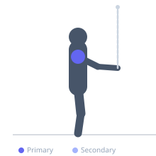

Exercise guide / Cable Internal Rotation
Cable Internal Rotation
The cable internal rotation targets the subscapularis — the primary internal rotator of the shoulder — using a cable at elbow height. The subscapularis is often undertrained despite being the largest rotator cuff muscle, and weakness in internal rotation can contribute to shoulder impingement and dysfunction. The cable provides consistent resistance through the full range, making it superior to band-based alternatives for precise loading.
Primary muscles
subscapularis
Secondary muscles
deltoid anterior
Equipment
Cable Machine (Dual Pulley / Functional Trainer)


Starting position
- Stand beside a cable machine with the pulley set at elbow height. Grip the handle with the outside hand. Elbow bent to 90 degrees, forearm pointing toward the cable machine (externally rotated position).
Setup
- Tuck a small towel between the elbow and the torso to keep the upper arm fixed. Keep loads very light — this is a corrective exercise.
Steps
- Step 1: Stand with the cable at elbow height, grip the handle with the outside hand.
- Step 2: Elbow at 90 degrees, forearm pointing toward the cable.
- Step 3: Rotate the forearm toward the body (internal rotation) while keeping the upper arm stationary.
- Step 4: Rotate until the forearm points across the body.
- Step 5: Return slowly under control to the starting position.
Coaching cues
- Elbow stays anchored — only the forearm moves
- Rotate from the shoulder joint
- Think subscapularis — the front of the rotator cuff
Breathing
- Breathe naturally throughout.
Range of motion
- From external rotation (forearm toward cable) to internal rotation (forearm across the body).
Tempo
- 2-1-3-0
Common mistakes
- Allowing the elbow to move away from the side during rotation
- Using weight that causes body rotation instead of isolated shoulder rotation
Safety
- Very light loads only — the subscapularis is targeted for health, not hypertrophy
Training
- strength: 12–20 reps
- strength: 2–3 sets
- Rest: {'strength': 60}